1 Installer net-tools
S’il s’agit d’une machine virtuelle ubuntu nouvellement installée, il se peut qu’elle ne dispose même pas des commandes d’outils réseau les plus élémentaires telles que ifconfig, alors installez d’abord net-tools.
sudo apt install net-tools2 Installer jperf
iperf est un outil de mesure et d’ajustement des performances du réseau qui peut fournir des informations telles que le delay, le débit, le taux de perte de paquets etc, jperf fournit une interface graphique basée sur iperf.
Installez d’abord iperf:
sudo apt-get install iperf Ensuite, installez jperf, comme jperf s’appuie sur l’environnement JRE pour exécuter des programmes graphiques, alors vérifiez d’abord si Java est installé, sinon utilisez la commande suivante:
sudo apt install openjdk-8-jdkEnsuite, téléchargez la dernière version de jperf dans xjperf Google CodePage.
Après la décompression, entrez dans le répertoire et exécutez le fichier bash après avoir accordé les autorisations:
sudo chmod u+x jperf.sh # or sudo chmod a+x jperf.sh command
./jperf.sh3 Topologie utilisée par le projet

4 Configurer la machine virtuelle
On peut voir que la topologie ci-dessus est composée de deux routeurs + trois hôtes, nous pouvons donc utiliser 5 machines virtuelles pour simuler la topologie pour la construire.
- Ubuntu Router 0：simuler Router 0
- Ubuntu PC 1：simuler PC 0
- Ubuntu PC 2：simuler PC 1
- Ubuntu Router 1：simuler Router 1
- Ubuntu PC 3：simuler Server
Copiez d’abord les 4 autres machines virtuelles sur la machine virtuelle d’origine, faites attention au paramètre d’adresse MAC et choisissez de régénérer l’adresse.
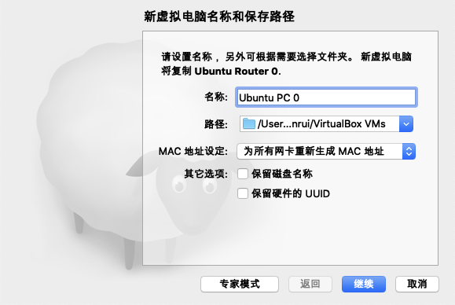

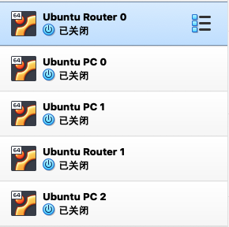
Selon la structure topologique, on peut conclure que le réseau utilise trois segments de réseau, donc trois interfaces de carte réseau virtuelle peuvent être utilisées pour simuler.
Ouvrez <<le gestionnaire de réseau hôte>> pour créer trois cartes réseau virtuelles et configurer les adresses IP.

Définissez la carte réseau de chaque machine virtuelle. La méthode de connexion est Host-Only. Notez que deux routeurs doivent être configurés avec deux cartes réseau et que le PC ne doit être configuré qu’avec une seule carte réseau.
Router 0

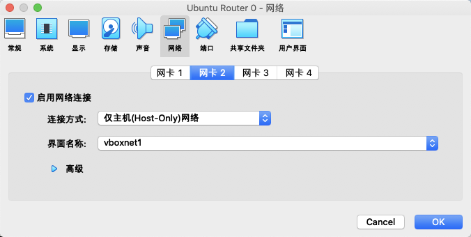
PC 0 PC 1

Router 1
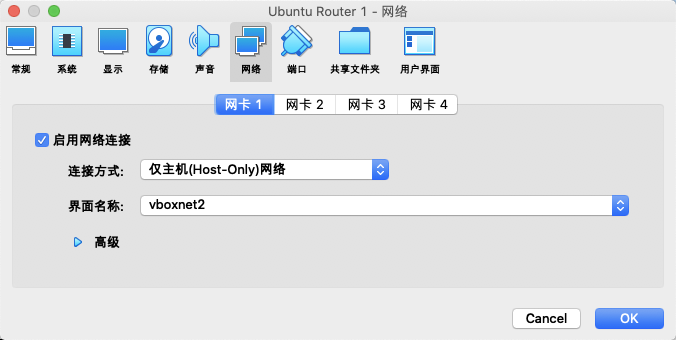

PC 2

5 Utiliser des machines virtuelles pour simuler la topologie
Ensuite, configurez le réseau pour chaque machine virtuelle à tour de rôle en fonction de la topologie. Notez que le service réseau du système doit d’abord être désactivé, sinon le service DHCP changera l’adresse IP et les autres informations que on a définies manuellement.。
Le PC 0 et le PC 1 doivent être configurés avec une adresse IP et une adresse de gateway.
PC 0
sudo service network-manager stop
sudo ip link set enp0s3 down
sudo ip link set enp0s3 name eth0
sudo ip link set eth0 upsudo ifconfig eth0 192.168.56.1 netmask 255.255.255.0
sudo route add default gw 192.168.56.254PC 1
sudo service network-manager stop
sudo ip link set enp0s3 down
sudo ip link set enp0s3 name eth0
sudo ip link set eth0 upsudo ifconfig eth0 192.168.56.2 netmask 255.255.255.0
sudo route add default gw 192.168.56.254Le routeur doit non seulement configurer les adresses IP des deux interfaces, mais également configurer la table de routage.
Router 0
sudo service network-manager stop
sudo ip link set enp0s3 down
sudo ip link set enp0s3 name eth0
sudo ip link set eth0 up
sudo ip link set enp0s8 down
sudo ip link set enp0s8 name eth1
sudo ip link set eth0 upsudo ifconfig eth0 192.168.56.254 netmask 255.255.255.0
sudo ifconfig eth1 192.168.57.1 netmask 255.255.255.0
sudo ip route add 192.168.56.0/24 via 192.168.56.254
sudo ip route add 192.168.57.0/24 via 192.168.57.1
sudo ip route add 192.168.58.0/24 via 192.168.57.2Étant donné que la machine virtuelle Linux que on utilise simule le comportement du routeur, la fonction de transfert du système Linux doit être activée.
Sous l’autorité root, utilisez la commande:
echo 1 > /proc/sys/net/ipv4/ip_forwardS’il s’agit d’une machine virtuelle nouvellement créée et qu’aucun mot de passe root n’est défini, vous pouvez utiliser la commande suivante pour définir un nouveau mot de passe:
sudo passwd rootRouter 1
sudo service network-manager stop
sudo ip link set enp0s3 down
sudo ip link set enp0s3 name eth0
sudo ip link set eth0 up
sudo ip link set enp0s8 down
sudo ip link set enp0s8 name eth1
sudo ip link set eth0 upsudo ifconfig eth0 192.168.58.254 netmask 255.255.255.0
sudo ifconfig eth1 192.168.57.2 netmask 255.255.255.0
sudo ip route add 192.168.56.0/24 via 192.168.57.1
sudo ip route add 192.168.57.0/24 via 192.168.57.2
sudo ip route add 192.168.58.0/24 via 192.168.58.254Sous l’autorité racine
echo 1 > /proc/sys/net/ipv4/ip_forwardPC 2
sudo service network-manager stop
sudo ip link set enp0s3 down
sudo ip link set enp0s3 name eth0
sudo ip link set eth0 upsudo ifconfig eth0 192.168.58.1 netmask 255.255.255.0
sudo route add default gw 192.168.58.254Effectuez un test après la configuration pour assurer que les hôtes et les routeurs de chaque segment de réseau peuvent faire à un ping.
6 Introduction au module QoS - TC
6.1 Méthode de contrôle de flux dans TC
Dans le système d’exploitation Linux, l’outil utilisé pour implémenter la QoS est TC (Traffic Control), qui utilise des règles pour établir une file d’attente pour le traitement des paquets de données.
Les principales méthodes de contrôle de traffic sont:
- SHAPING
- SCHEDULING
- POLICING
- DROPPING
6.2 Établissement de règles TC
Le traitement du trafic par TC est établi par trois types d’objets: qdisc, class et filter.
qdisc, queueing discipline. Quand le noyau Linux envoie des paquets de données via une certaine interface réseau, il doit ajouter les paquets de données à la file d’attente selon le qdisc configuré pour cette interface. Ensuite, le noyau sortir autant de paquets de données que possible de qdisc et les remettra au module de pilote de la carte réseau.
Le qdisc le plus simple est pfifo, qui n’effectue aucun traitement sur les paquets de données entrants, et les paquets de données passent par la file d’attente de manière FIFO.
Qdisc est divisé en qdisc sans classe et qdisc avec classe.
classless qdisc：
[p|b]fifo：FIFOpfifo_fast：qdisc standardred：Random Early Detectionsfq：Stochastic Fairness Queueingtbf：Token Bucket Filter
classful qdisc：
CBQ：Class Based Queueing. Il implémente une structure de catégorie de partage de connexion riche, qui a la capacité de shaping et la capacité de gérer la priorité.HTB：Hierarchy Token Bucket。HTB implémente la limitation de la bande passante via TBF (Token Bucket Filter) et peut également définir des priorités. HTB peut non seulement garantir la bande passante de chaque class, mais également définir la limite supérieure de bande passante et permettre à des classes spécifiques de dépasser la limite supérieure de bande passante et d’occuper la bande passante d’autres classes.PRIO：PRIO QDisc。Il ne peut que classer la priorité du trafic, sans mise en œuvre shaping, et envoyer des paquets en fonction de la priorité.
La classe (class) est basée sur qdisc, une classe racine doit être établie pour une qdisc, puis une sous-classification y est établie. Construisez une arbre en créant des classes, classifiez le trafic et fournissez les règles de trafic correspondantes pour chaque classe.
Le filtre (filtre) sert aux classe, il est utilisé pour mapper différents trafics à des classes, telles que le mappage du trafic de différentes adresses IP ou protocoles (ports) vers différentes classifications.
7 Un exemple de mise en œuvre de QoS par TC
Supposons que le serveur de la figure ci-dessus fournisse des services de trois protocoles: HTTP (Web), SMTP (E-mail) et Telnet. On espére utiliser shaping pour garantir QoS. On veut allouer indépendamment 20 Mbit / s à Telnet, laissant 80 Mbit / s au partage de HTTP et SMTP, pour s’assurer que leur limite inférieure de bande passante est de 40 Mbit / s, mais en même temps, ils peuvent emprunter la bande passante de l’autre.
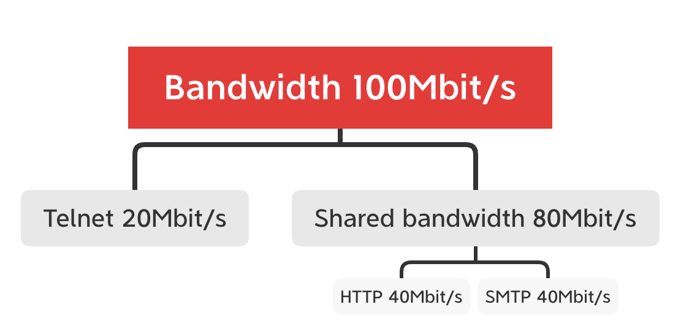
Utilisez la commande TC suivante sur le port eth0 sur la machine virtuelle simulant Router1:
# 1. Créer une qdisc
tc qdisc add dev eth0 root handle 1: htb default 20
# 2. Créer des classes
# 1）Créer une sous-class 1: 1 pour Telnet et allouez une bande passante de 20 Mbits
tc class add dev eth0 parent 1:0 classid 1:1 htb rate 20Mbit ceil 20Mbit
# 2）Créer une sous-class 1: 2 et allouez une bande passante de 80 Mbits
tc class add dev eth0 parent 1:0 classid 1:2 htb rate 80Mbit ceil 80Mbit
# 3）Créer une sous-class 1: 21 pour SMTP, bande passante garantie 40 Mbit, bande passante limite supérieure 80 Mbit
tc class add dev eth0 parent 1:0 classid 1:21 htb rate 40Mbit ceil 80Mbit
# 4）Créer une sous-class 1: 22 pour HTTP，Bande passante garantie 40 Mbit, bande passante limite supérieure 80 Mbit
tc class add dev eth0 parent 1:0 classid 1:22 htb rate 40Mbit ceil 80Mbit
# 3. Créer des filters
# 1) Liez Telnet, le port 23 à la catégorie 1: 1
tc filter add dev eth0 protocol ip parent 1:0 prio 1 u32 match ip dport 23 0xffff flowid 1:1
# 2) Liez SMTP, le port 23 à la catégorie 1: 21
tc filter add dev eth0 protocol ip parent 1:0 prio 1 u32 match ip dport 25 0xffff flowid 1:21
# 3) Liez HTTP, le port 80 à la catégorie 1: 22
tc filter add dev eth0 protocol ip parent 1:0 prio 1 u32 match ip dport 80 0xffff flowid 1:22Utilisez jperf pour la surveillance du trafic. Afin d’éviter les conflits de port, supposez que les ports correspondant aux trois services sont 5023, 5025 et 5080 (modifiez le filtre correspondant). Dans le même temps, afin de faciliter l’observation, la bande passante ci-dessus est réduite à un dixième, à savoir 2Mbit, 4Mbit, 4Mbit.
Utilisez . / Jperf.sh pour exécuter trois jperf sur une machine virtuelle qui simule Server, puis utilisez le client jperf sur trois hôtes différents pour envoyer des données.

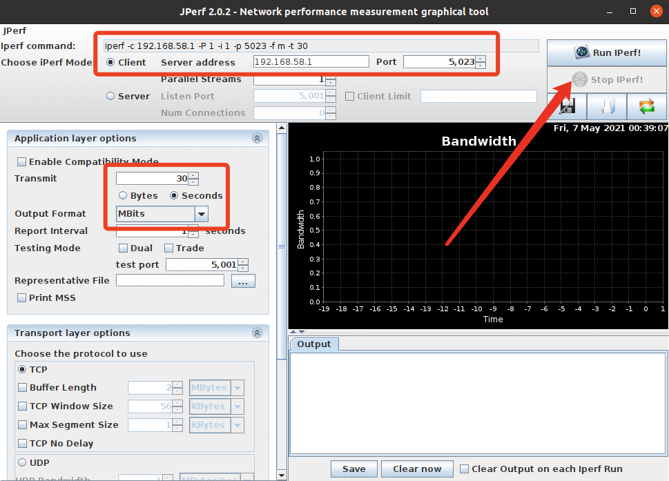
Lorsqu’aucune règle TC n’est ajoutée:
port 23
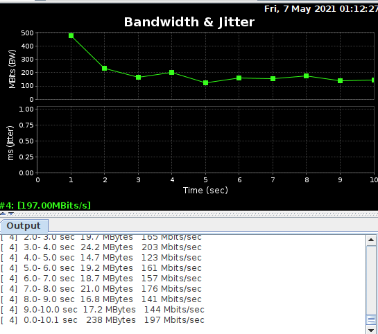
port 25
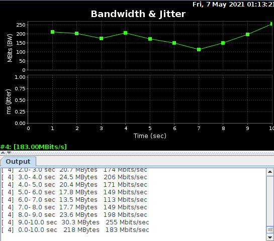
port 80
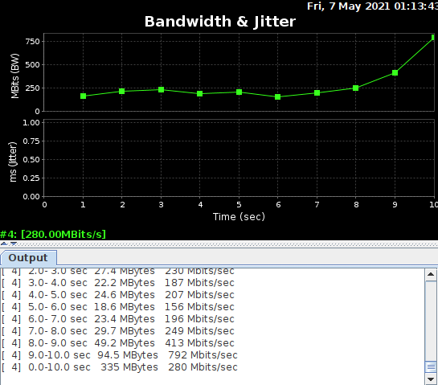
Après avoir ajouté des règles TC:
port 23

port 25
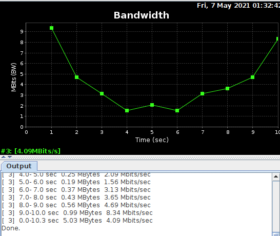
port 80
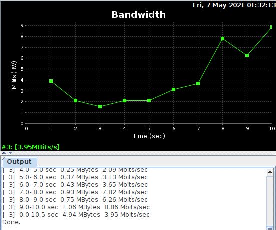
La réalisation de cette projet dans un environnement de machine virtuelle présente un sérieux inconvénient. Quand plusieurs serveurs-clients jperf communiquent en même temps, l’utilisation du CPU sera trop élevée, ce qui augmentera le délai d’envoi des paquets et rendra les résultats de jperf inexactes. Le meilleur environnement est des hôtes physique.
De plus, en suivant les étapes ci-dessus, plus de mécanismes de QoS peuvent être mis en œuvre pour cette topologie via différentes règles TC, et la topologie peut également être modifiée pour simuler des mécanismes de QoS pour d’autres réseaux.
最后更新： 2023年01月01日 19:27